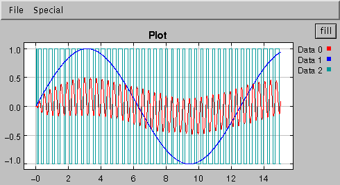

Ptolemy II CT Domain demo - Micro Accelerometer with Digitial Feedback Control
Introduction:
Micro accelerometers are MEMS devices that use beams, gaps, and electrostatics
to measure acceleration. Beams and anchors, separating by gaps, form parallel
plate capacitors. When the device is accelerated in the sensing director, the
displacement of the beams causes the change of the gap sizes, which further
causes the change of the capacity. By measuring the change of capacity (using
the Winston capacitor bridge), the accelerate can be obtained accurately.
Feedback can be applied to the beams by charging the capacitors. Using
feedback can reduce the sensitivity to process variations,
eliminate mechanical resonances, and increase sensor bandwidth, selectivity
and dynamic range.
Sigma-delta modulation[1], also called the pulse density modulation or the
bang-bang control, is a digital feedback technique, which gets the A/D
conversion functionality "for free". The figure below shows the conceptual
diagram of system. The central part of the digital feedback is an one
bit quantizer.

Implementation:
We implemented the system as Mark Alan Lemkin designed in [2]. As shown in
the Figure below, the second order CT subsystem is used to model the beam.
The voltage on the beam-gap capacitor is sampled every T seconds (much
faster than the required output of the digital signal), then filtered by
a lead compensator (FIR filter), and fed to an one-bit quantizer.
The outputs of the quantizer are converted to force and fed back to the
beams. The outputs are also counted and averaged every N*T seconds to
produce the digital output. In our example, the external acceleration
is a Sin wave. The TclBlend code is here

Simulation
To run the simulation (in the ptolemy cluster), click Go
=======
Or, for a tclBlend demo, invoke:
cd $PTII/ptolemy/domains/ct/demo
setenv CLASSPATH $PTII
jtclsh
source SigmaDelta.tcl
Result
The result should be like:
CTPlot:

DEPlot:

References
[1] James C. Candy, "A Use of Limit Cycle Oscillations to Obtain Robust Analog-to-Digital Converters", IEEE Trans. on Communications, Vol. COM-22, No. 3, March 1974, pp298-305
[2] Mark A. Lemkin, "Micro Accelerometer Design with Digital Feedback Control", doctoral dissertation, University of California, Berkeley, Fall 1997
UNIVERSITY OF CALIFORNIA
Department of Electrical Engineering and Computer Sciences